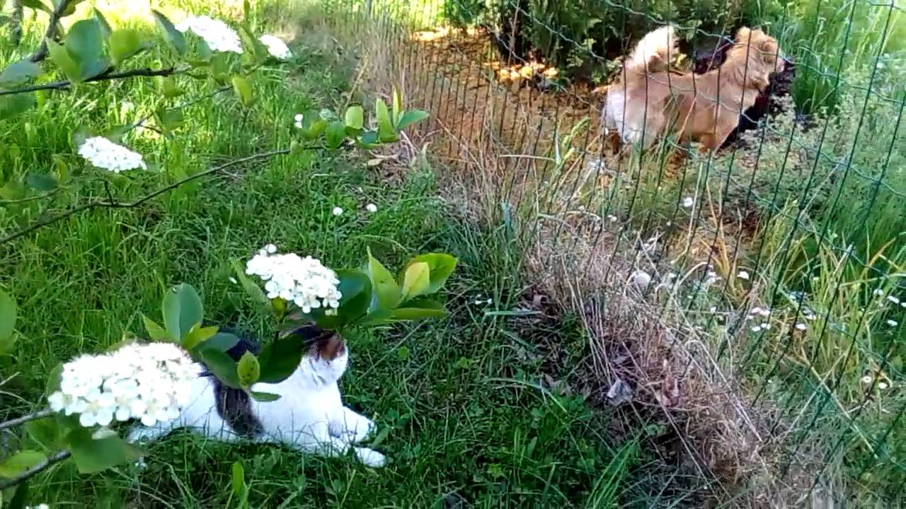

Šunys, Šunų veislynai - Dunis.lt
2020.10.30 06:04
Prisijungti Registracija Veislynai Veterinarijos klinikos Apie Kontaktai Pridėti veislyną
Šunys,
Šunų veislynai
Rinktis veislę Veislynai Katės Abisnijos Bengalijos Bombėjaus Britų ilgaplaukiai Britų trumpaplaukiai Burmos Devonreksai Egzotų trumpaplaukiai Kanados sfinksai Kornvalio reksai Kurilų trumpauodegiai ilgaplaukiai Meino meškėnai Orientalų-siamo Persų veislės katės Peterbaldai Rusų mėlynieji Selkirk rex Sibiro Škotų nulėpausiai/stačiaausiai Šventosios birmos Tailando Kita Straipsniai Šunys Akita inu Aliaskos malamutai Amerikiečių kokerspanieliai Auksaspalviai retriveriai Australų aviganiai Baltieji Šveicarų aviganiai Basendžiai Berno zenenhundai Biewer Jorkšyro terjerai Bordo dogai Brabanto grifonai Briuselio grifonai Bulterjerai Čekoslovakų vilkšuniai Chodsko šuo Cvergšnauceriai Eurazijos špicai Ilgaplaukiai koliai Ilgaplaukiai taksai Jorkšyro terjerai Kavalieriaus Karaliaus Karolio Spanielis Labradoro retriveriai Lasos apsai Leonbergeriai Meksikos beplaukis šuo Mopsai Niūfaundlendai Overnės brakai Pastoriaus raselo terjerai Pekinai Pomeranijos špicai Prancūzų buldogai Rusų ilgaplaukiai kurtai Saliukiai Samojedai Šelčiai Senbernarai Ši cu Šikoku ken Tailando Ridgeback šunys Trumpaplaukiai vengrų vižlai Vakarų Škotijos baltieji terjerai Vengrų trumpaplaukiai vižlai Vidurinės Azijos aviganiai Vipetai Vokiečių aviganiai Vokiečių bokseriai Vokiečių nykštukiniai špicai Šunų viešbutis Geriausiai įvertinti veislynai Silkberry*LTŽydroji fėja
Smėlinė Svaja
RUBINO KELIAS
Auksinė Žvaigždė
Šiuo metu turime mažylių vadą!
SENTIMENTAI
Akita inu, Vokiečių nykštukiniai špicai(Dar nėra įvertinimų) Loading... 115
Eristika
Briuselio grifonai 4.25 Loading... 168LASINIU PILIAKALNIS
Ši cu 4.00 Loading... 346Rubidis
Čekoslovakų vilkšuniai, Rusų ilgaplaukiai kurtai 4.00 Loading... 310 Šiuo metu turime mažylių vadą!Kerų Slibinai
Baltieji Šveicarų aviganiai, Bulterjerai(Dar nėra įvertinimų) Loading... 102
Ancient Kynopolis
Tailando Ridgeback šunys 4.00 Loading... 213 Šiuo metu turime mažylių vadą!Ruda Pupa
Overnės brakai, Trumpaplaukiai vengrų vižlai 5.00 Loading... 486 Šiuo metu turime mažylių vadą!Plieninė iltis
Vokiečių aviganiai 3.00 Loading... 575 Šiuo metu turime mažylių vadą!Aukštagirio Aidas
Vokiečių aviganiai 4.60 Loading... 415Tikra Idilė
Kavalieriaus Karaliaus Karolio Spanielis 3.95 Loading... 1 040Alto Paradas
Vokiečių aviganiai 4.50 Loading... 229Laimės Žvaigždė
Vokiečių bokseriai 3.50 Loading... 749Pašilių Saulė, Berno Zenenhundų veislynas
Berno zenenhundai 5.00 Loading... 406 Šiuo metu turime mažylių vadą!Baltųjų Dobilų Sala
Kavalieriaus Karaliaus Karolio Spanielis 3.18 Loading... 1 323 Šiuo metu turime mažylių vadą!Tibeto liūtas
Ši cu 4.17 Loading... 1 259 Šiuo metu turime mažylių vadą!Andajus
Vidurinės Azijos aviganiai 2.75 Loading... 515 Šiuo metu turime mažylių vadą!Pamario Vilke
Basendžiai, Šunys 4.75 Loading... 549 Šiuo metu turime mažylių vadą!Aura-charizma
Vengrų trumpaplaukiai vižlai 5.00 Loading... 281 Šiuo metu turime mažylių vadą!Skraidančios ausytės
Australų aviganiai 3.83 Loading... 343Kilnioji Širdis
Niūfaundlendai 5.00 Loading... 142 Šiuo metu turime mažylių vadą!Senovės kilnumas
Bordo dogai 3.25 Loading... 773 Šiuo metu turime mažylių vadą!Rudė
Ilgaplaukiai taksai 5.00 Loading... 335 Šiuo metu turime mažylių vadą!Lyderio kodas
Vokiečių aviganiai 4.11 Loading... 734 Šiuo metu turime mažylių vadą!Mažasis AVATARA
Mopsai 2.89 Loading... 763 Šiuo metu turime mažylių vadą!Mafija Gracija
Cvergšnauceriai, Lasos apsai, Vipetai 3.64 Loading... 1 017Penktas Elementas
Saliukiai, Samojedai 4.00 Loading... 464Stabmeldys
Vipetai 4.00 Loading... 397 Šiuo metu turime mažylių vadą!Rasos Perlai
Berno zenenhundai, Eurazijos špicai, Ši cu 4.25 Loading... 1 027 Šiuo metu turime mažylių vadą!NUDUS DEUS
Meksikos beplaukis šuo 4.00 Loading... 656MEDAUS KVAPAS
Prancūzų buldogai 3.38 Loading... 2 226Absoliuti Idilė
Leonbergeriai, Vipetai 5.00 Loading... 578Klajoklių šuo
Samojedai 3.20 Loading... 520 Šiuo metu turime mažylių vadą!Aliuzija
Basendžiai, Saliukiai 5.00 Loading... 565 Šiuo metu turime mažylių vadą!Auksinis Vilkas
Vokiečių aviganiai 3.00 Loading... 573 Šiuo metu turime mažylių vadą!Šalta Nosis LT
Britų trumpaplaukiai, Labradoro retriveriai, Meino meškėnai 3.36 Loading... 1 058 Šiuo metu turime mažylių vadą!Iš Stasenu
Baltieji Šveicarų aviganiai 5.00 Loading... 925Laimės Žvaigždė
Vokiečių bokseriai 4.00 Loading... 1 103Rubidis
Rusų ilgaplaukiai kurtai 5.00 Loading... 334Smėlinė Svaja
Amerikiečių kokerspanieliai 4.44 Loading... 1 127Gintaro akys
Čekoslovakų vilkšuniai 3.94 Loading... 1 487Vandenio Era
Labradoro retriveriai 5.00 Loading... 460Gruodas
Šikoku ken, Vidurinės Azijos aviganiai 3.67 Loading... 496RUBINO KELIAS
Pekinai 4.43 Loading... 1 142is Sapieginės
Vokiečių aviganiai 3.25 Loading... 307Auksinė Žvaigždė
Ilgaplaukiai koliai, Šelčiai 4.31 Loading... 2 009 Šiuo metu turime mažylių vadą!Agros lobis
Berno zenenhundai 4.11 Loading... 601Unoravo
Chodsko šuo 3.20 Loading... 650Girios dvasia
Čekoslovakų vilkšuniai 3.56 Loading... 1 600Gintarinė Širdis
Brabanto grifonai, Vidurinės Azijos aviganiai 5.00 Loading... 579Šunų veislynas ,,Azijos liūtas"
Amerikiečių kokerspanieliai, Biewer Jorkšyro terjerai, Briuselio grifonai, Jorkšyro terjerai, Vakarų Škotijos baltieji terjerai, Vidurinės Azijos aviganiai 4.00 Loading... 1 827Apie veislę
Nusprendėte, kad būtent dabar pats geriausias metas yra įsigyti šunį? Tuomet belieka tik pridurti, kad teks įdėti šiek tiek pastangų iki kol jūsų namuose atsidurs keturkojis, o šunų veislynai yra ta vieta, kurioje apsilnakymo tikrai neišvegsite. Būtina priminti, kad šiandien šunų veislynų yra labai daug ir kiekvienas iš jų gali pasiūlyti ne tokį jau ir menką pasirinkimą.
Kokių veislių šunų galite rasti ir įsigyti lietuviškuose šunų veislynuose? Kiekvieno pirkėjo džiaugsmui reikia pabrėžti, kad sąrašas yra iš tiesų įspūdingas: veislynuose jūsų laukia vipetai, berno zenenhundai, taksai, samojedai, Havanos bišonai, Maltos bišonai, Sibiro haskiai, auksaspalviai retriveriai ir daugelis kitų veislių šunų. Akivaizdu, kad labai smagus, tačiau tuo pat metu ir nelengvas uždavinys yra nuspręsti, kokios veilės šuo jums iš tiesųr reikalingas. Vis dėlto, svarbu prisiminti ir tai, jog egzistuoja labai daug gairių, kurios yra susijusios su šuns išvaizda, charakteriu, priežiūros ypatumais – būtent jie gali pasufleruoti, kokio šuns jums reikia iš tiesų. Pavyzdžiui, jei norite gracingo, greito suns, kuriam reikėtų nedaug priežiūros, puikiai tiks vipetai, o, o jei norite ypač dekoratyvaus, išdaigas bei sniegą mėgstančio, tuomet geresnio pasirinkimo nei samojedas ar Sibiro haskis tikrai nerasite.
Jei jau nusrendėte, kokios veislės šuns norite, tačiau siekiate išsirinkti pačią geriausią jo versiją, tokiu atveju vertėtų prisiminti, kad yra keletas dalykų, kurių tikrai negalima pamiršti. Visų pirma, verta prisiminti, kad kiekvienais metais yra skelbiami pačių geriausių šunų veislių sąrašai. Tai – puiki proga pasitikrinti, ar iš tiesų pasirinkote tos veislės gyvūną, kuri šiuo metu yra ant bangos . Dar keletas elementų, kurie padės suprasti, kad esate teisingame kelyje, tai – tėvai – čempionai arba puikiai parodose įvertinti tėvai.
Svarbiausias kriterijus, į kurį yra būtina atkreipti dėmesį renkantis veislyną, yra pasiūla. Jei gyvenate mažesniame miestelyje, iš anskto teks nusiteikti tam, kad gali tekti įveikti ne tokią jau ir trumpą distanciją, kol rasite tinkamiausią šunų veislyną. Tiesa, nusprendus, kokios veislės šunį norite įsigyti, pirmiausia reikėtų apžvegti pasiūlą internetu ir tik po to vykti į veislyną. Dar vienas patarimas: kuo anskčiau pradėsite veislyno paieškas, tuo geriau – tuo didesnė tikimybė rasti tokį gyvūną, apie kokį ir svajojate.
Kaip matyti, šuns veislės bei veislyno pasirinkimas yra nesudėtingos užduotys, kurias įveikti tikrai teks tam, jei norite turėti naują šeimos narį. Visos pastangos, kurias teks įdėti ir visos išlaidos, kurias teks išleisti, netruks atsipirkti – naujasis šeimos narys padovanos jums pačias geriausias emocijas, puikų laisvalaikį ir, kitokią, kur kas smagesnę, kasdienybę.
Navigacija Veislynai Veterinarijos klinikos Apie Kontaktai Žymos Skotijos nulepausiai abisnijos spanieliai vidurines azijos aviganis berno zenenhundas kanados sfinksai nulepausis katinas nulepausiai katinai Meino meskenas Vokiečių aviganiai vokieciu aviganis Škotų nulėpausis Škotų stačiaausis meino meskenai Škotų nulėpausiai britu trumpaplaukis britu trumpaplaukiai aviganis aviganiai kaciu veislynas Administracijos kontaktai info@dunis.lt Draugaukime Facebook 2020© Visos teisės saugomos. Dunis.lt